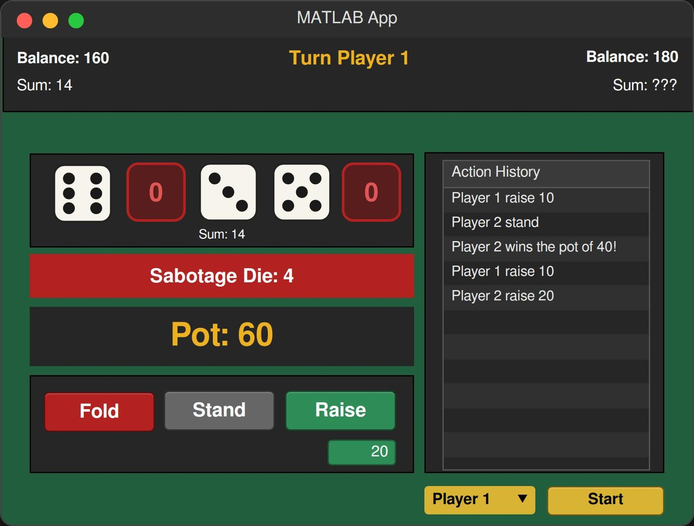

Class project
ENG 06 final project · Team of 3 · Jan – Mar 2026
Fold or Roll: Networked Dice Game
A two-player dice betting game in MATLAB App Designer — playable between two separate computers in near real time. The class asked for a GUI game; we built a distributed one.

The game
Each player rolls five dice and bets poker-style — Raise, Stand, or Fold. The twist is a random Sabotage Die rolled each round: any of your dice matching it become zeros. So a strong-looking hand can be gutted by one unlucky roll, which is what makes the betting interesting.
The assignment only required a working GUI game on one machine. We decided it should be playable between two people on two computers, which turned a UI exercise into a distributed systems problem.
What I did
Networking & synchronization
- Used ThingSpeak as a shared database. It's an IoT cloud platform meant for sensor telemetry, not game state — but it exposes a REST API that both computers can read from and write to, which is all a turn-based game actually needs. No server to host, nothing to pay for.
- Built timer-based polling at roughly one update per second, so balances, the pot, whose turn it is, and the action history stay consistent on both screens.
- Added turn gating and a two-stage connection process — players can only act on their own turn, and Player 2 joins automatically once Player 1 starts the game.
- Designed a compressed JSON data format to fit inside the platform's field size limits while keeping each player's dice on their own machine. The opponent's total stays hidden until the showdown, which meant deciding what genuinely had to be shared versus what only looked like it did.
Game logic
- Wrote the side-pot algorithm, built to handle any number of players rather than hard-coding two.
- Implemented game and round setup: antes, forced all-ins, eliminations, and tied-pot carryover between rounds.
- Built the dice-roll animation and sound effects.
The takeaway
Syncing two systems turned out to be less about the network and more about deciding who owns which piece of data, and when it's allowed to change. Once that was settled, the polling loop was straightforward. That's the same question behind remote sensor monitoring and test-rig data acquisition — which is where I expect to run into it again.
Gallery
Screens


What I'd change
Polling at 1 Hz is the honest weak point — it's simple and it worked, but it means up to a second of lag and a steady stream of requests whether anything changed or not. A real implementation would push updates instead of polling for them, and would need a proper answer for conflicting writes rather than relying on turn gating to make conflicts impossible by construction.